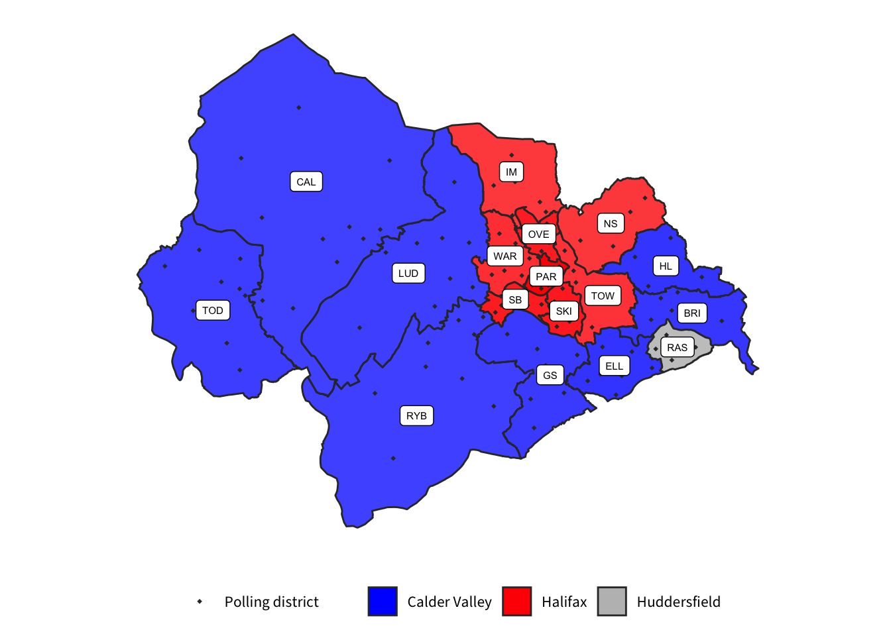
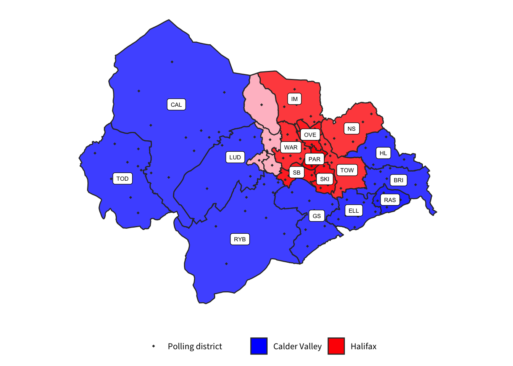

This page sets out initial ideas for alternative proposals.
This proposal involves moving Brighouse ward to the Huddersfield constituency to the south. This would require that Hipperholme and Lightcliffe become part of Halifax, so as not to split Calder Valley in half. To equalise the numbers, Sowerby Bridge is moved to Calder Valley.
| 2023 Constituency | Electorate |
|---|---|
| Calder Valley | 70,120 |
| Halifax | 72,043 |
This would leave Huddersfield as a very large constituency, well outside the permitted range However, it may be possible to move some or all of Almondbury to a rebalanced Dewsbury constituency to leave Huddersfield within the permitted range.
Moving Rastrick to Huddersfield has much the same effect as moving Brighouse, except that it does not divide Calder Valley. This means the rest of the wards in Calderdale are unchanged.

| 2023 Constituency | Electorate |
|---|---|
| Calder Valley | 70,638 |
| Halifax | 70,802 |
This proposal involves dividing Luddenden ward between Halifax and Calder Valley constituencies. To bring Calder Valley into the permitted range, approximately 1,800 electors need to be moved.
This map shows the effect of moving the Wainstalls, Luddenden, Luddendenfoot and Warley Wood districts (shown in pink) into Halifax. This moves 3,374 electors and results in two constituencies of very similar size.

| 2023 Constituency | Electorate |
|---|---|
| Calder Valley | 75,450 |
| Halifax | 75,100 |
The Electoral Commission’s own report already includes proposals to divide wards in other constituencies:
… We propose that the Manor Castle ward be transferred from the existing Sheffield Central constituency into our proposed Sheffield Heeley constituency, bringing the former within the permitted electorate range. We then propose retaining the existing division of the Richmond ward between the Sheffield Heeley and Sheffield South East constituencies. We propose including the south-west part of the ward, including the areas of Four Lane Ends and Intake, in the Sheffield Heeley constituency, and the remainder of the ward, centred on Richmond, in the Sheffield South East constituency. We recognise that this divides a ward between constituencies, but consider that doing so enables the retention of a significant number of existing constituencies largely unchanged. — Boundary Commission Initial proposals for Yorkshire and the Humber §35
… We propose that the Dalton ward be divided, with the area around Kirkheaton being included in the proposed Dewsbury constituency, and the rest of the ward, centred on the Rawthorpe area, remaining in the Huddersfield constituency. We consider that not dividing a ward here would inevitably result in more disruption to local ties across the area. — ibid §61
… [W]e also propose that the Gipton & Harehills ward be divided between the Leeds Central and Leeds East constituencies, with the area in the west of the ward, centred on Harehills, being included in the Leeds Central constituency, and the remainder of the ward, centred on Gipton, being included in our proposed Leeds East constituency … If we were not to divide a ward in the City of Leeds, we consider that there would inevitably be more disruption to local ties. — ibid §69
This would leave the proposed Batley and Hipperholme constituency with 66,845 electors - 2,879 short of the minimum required.